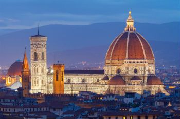
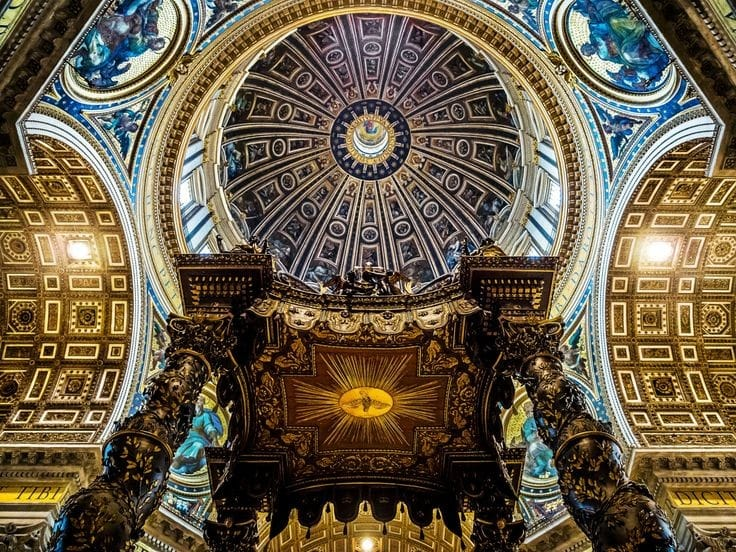
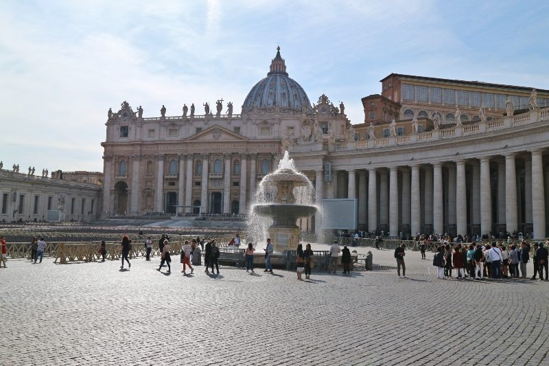
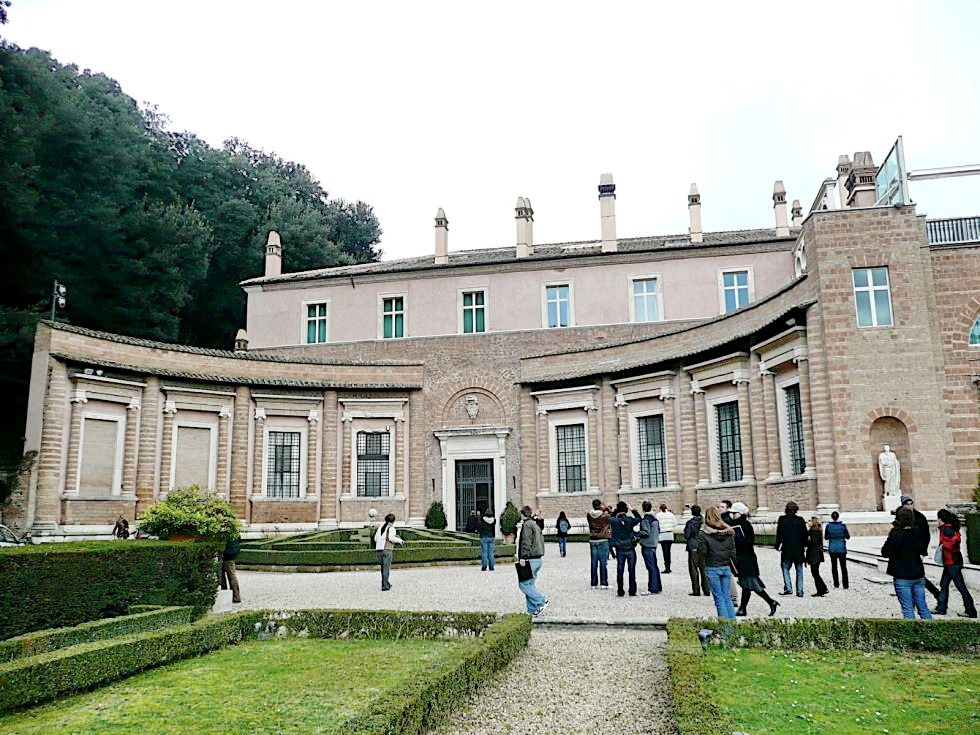
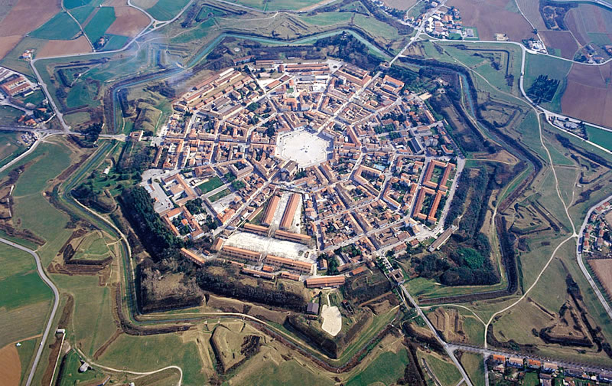
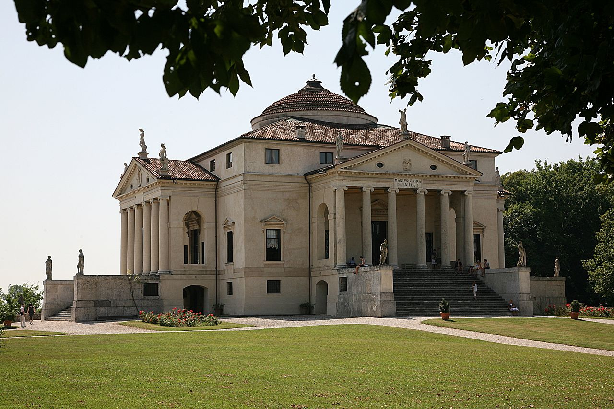

-

Catedral de Santa Maria
Catedral em Florença, Itália
Essa catedral florentina é uma das maiores igrejas do cristianismo, possui 160 metros de comprimento, 43 metros de largura e 90 metros no transepto. A altura interna da cúpula (feita por Filippo Brunelleschi) é de 100 metros. Além disso, é um símbolo que representa a riqueza e o poder da capital Toscana nos séculos XVIII e XIV.
-

Basílica de São Pedro
Interior da Basílica no Vaticano, Itália
O interior da basílica é coberto de mármore policromado, de estátuas, de quadros e de tesouros inestimáveis. O toque final terá lugar no tempo do papa Alexandre VII, que encomendou em 1656 a Bernini, a gigantesca colunata da praça de São Pedro.
.
-

Basílica de São Pedro
Exterior da Basílica no Vaticano, Itália
A cúpula de São Pedro tem 133,30 metros de altura, contando do nível da rua até o topo da cruz. Por exemplo, esta altura equivale a um prédio de 44 andares. Seu diâmetro interno tem 41,50 metros e o externo 58,90 metros, e pesa cerca de 14.000 toneladas.
-

Villa Madama
Villa Madama, Roma
Construída para o papa, era uma imitação das vilas que existiam por toda a Roma clássica e cuja descrição Rafael encontrou nos textos de Plínio o Velho. Villa Madona – a mais antiga, foi projeto inacabado do artista, onde repete com muito cuidado aquilo que vinha descrito nos textos.
.
-

Palma Nova
Palma Nova, Itália
Em seu formato de estrela, Palmanova que possui 13,32 km² de área e cerca de 5 mil habitantes, foi uma das únicas cidades a ser construída em formatos geométricos e no esquema radiocêntrico, sendo um dos símbolos de concepção artística e filosófica no Renascimento.
-

Villa Capra
Villa Capra, Vicenza
A Villa Capra, também conhecida como Villa Rotonda, é uma das mais belas e famosas villas de Andrea Palladio e provavelmente de todas as villas do Veneto, sendo um dos mais celebrados edifícios da História da Arquitetura da época moderna. É um edifício aristocrática, perto de Vicenza, Itália, foi construída entre 1550-1559. O nome "Capra" deriva do apelido dos dois irmãos que completaram o edifício, depois de lhes ter sido cedido em 1591.
.